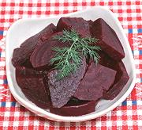

|
Pickled BeetsDenmark - syltede rødbeder | ||||
| Makes: Effort: Sched: DoAhead: |
8 app ** 2 days Best |
These popular everyday pickled beets are served with all sorts of meats, fish, and stews, and as toppings for Smørrebrød - especially good with liver pastes and the like. | |||
|
3 2 ------- 3 1 2/3 1/3 1-1/2 2 2 1 2 ------- |
# in --- c T c T T t --- |
Beets Horseradish root (1) -- Pickle Vinegar (2) Sea Salt Sugar (3) Allspice, whole Mustard Seeds Peppercorns Bay Leaves Thyme sprig Dill sprigs ---------- |
These Beets are best if you close the jar and let them mature a couple of days in a cool place, but they can be served in a couple of hours if need be. Make: - (2 days - 25 min work)
|